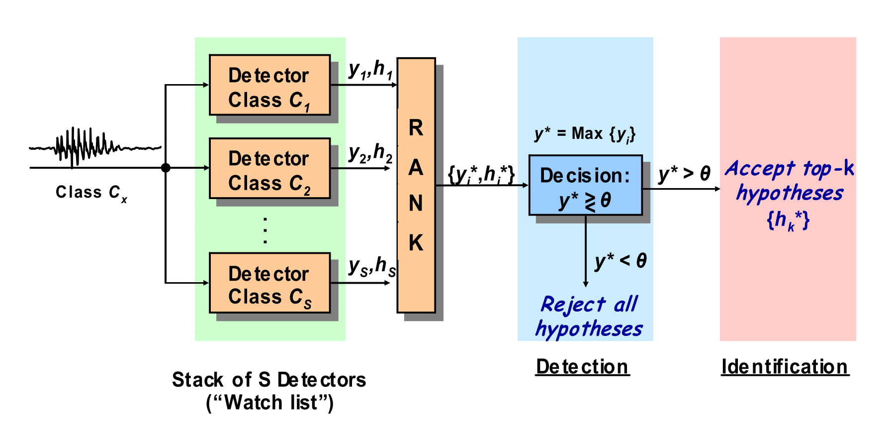

OverviewThe Multitarget Challenge aims to assess how well current speech technology is able to determine whether or not a recorded utterance was spoken by one of a large number of "blacklisted" speakers [1]. It is a form of multi-target speaker detection based on real-world telephone conversations. Data recordings are generated from call center customer-agent conversations. Each conversation is represented by a single i-vector [2]. Given a pool of training and development data from non-Blacklist and Blacklist speakers, the task is to measure how accurately one can detect 1) whether a test recording is spoken by a Blacklist speaker, and 2) which specific Blacklist speaker was talking. Task and BaselineAlthough the original signal is from the acoustic signal, no prior knowledge on speech processing is needed because each acoustic waveform represented in a 600-dimensional vector which is called i-vector. We used Kaldi recipe (egs/sre10/v2) to train i-vector extractor and extracting i-vector. 13,000 hours of unlabeled speech are used to train the i-vector extractor. We provide i-vectors from 41,845 utterances for the training set and 8,631 utterances for development set. For evaluation, we will release test set i-vector from 16,017 utterances. The challenge will measure system's performance using this test set. Same blacklist speakers appear in all three sets, but background speakers appeared in a different set can be regarded as different speaker.  The baseline system is from the multi-target detector in [2]. From each multi-target detector scores of the input, we can have the rank of the scores and accept top-k hypotheses. If k is S, the system became top-S detector which only cares about input is from blacklist cohort or not. If k is 1, the system became top-1 detector and it not only care about the input is from blacklist cohort, but also need to identify which blacklist speaker is spoken among the blacklist cohort. The performance will be measured in terms of Equal Error Rate (EER) on both Top-S and Top-1 detector. For more detailed information and how to measure performance, you can find at MCE 2018 Plan In order to make all participants starting from the same baseline, we prepared baseline example here: https://github.com/swshon/multi-speakerID
Instructions
Timeline
OrganisersSuwon Shon, MIT Computer Science and Artificial Intelligence Lab., USADouglas Reynolds, MIT Lincoln Lab., USA James Glass, MIT Computer Science and Artificial Intelligence Lab., USA Contact
For any questions to organizers, please send to: mce@lists.csail.mit.edu References
[1] E. Singer and D. Reynolds, “Analysis of Multitarget Detection for Speaker and Language Recognition,” in ODYSSEY The Speaker and Language Recognition Workshop, 2004, no. 4, pp. 301–308. |